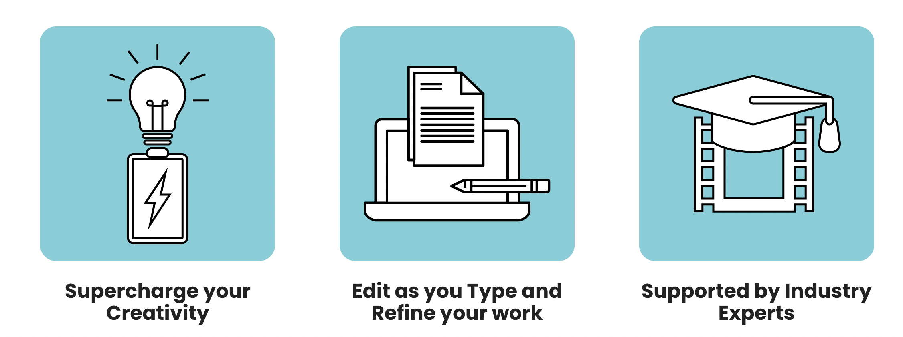
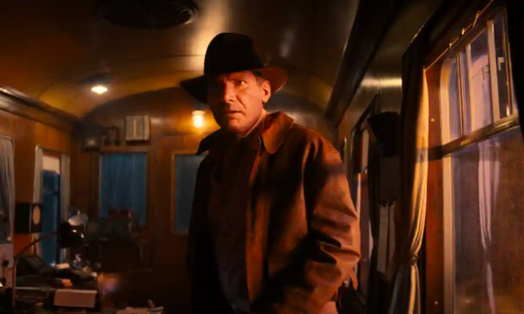
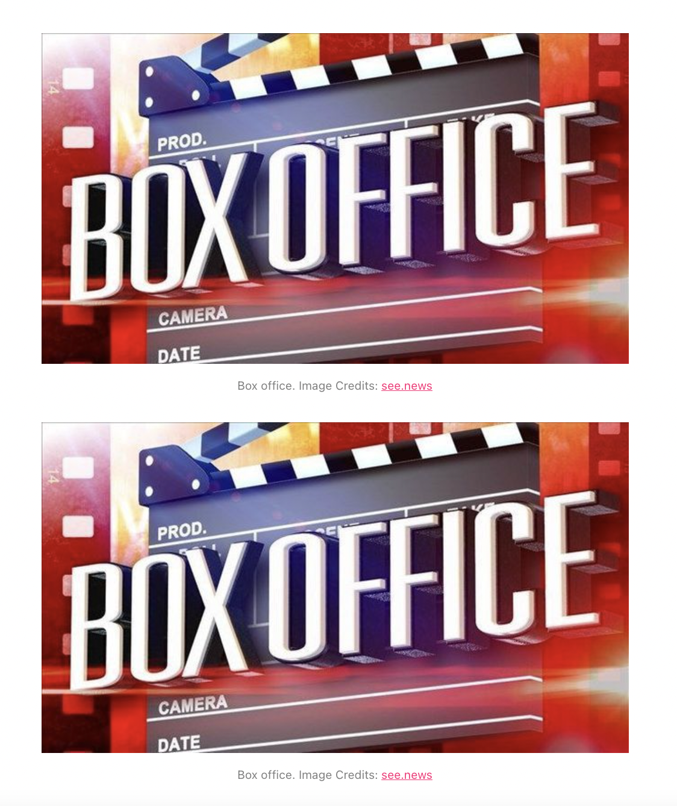
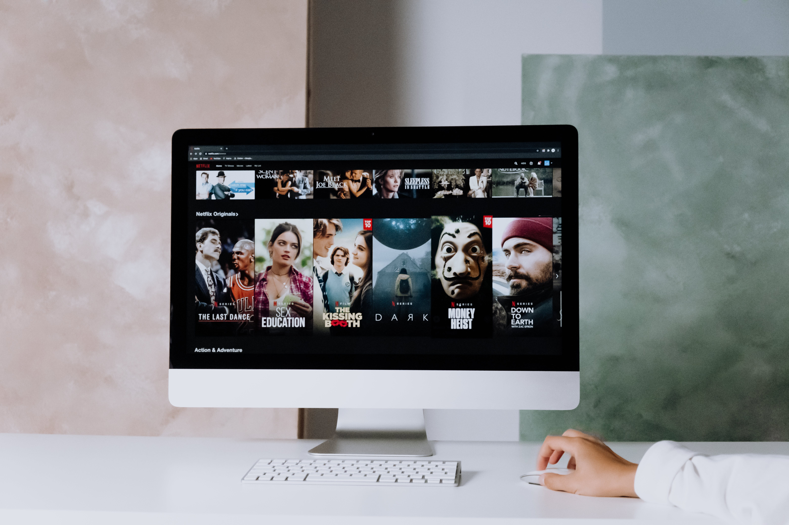

Week 7 - Images and Multimedia
IL activity: Analysing Digital Images
Task 1: The stages of the creative process
Through this project, I have had to engage with the web in a more creative way than I ever had before. One of the most important stages in this process is preparation. Instead of looking at websites solely for my own pursuit of knowledge, I've begun to consider user experiences and how different elements and features of websites can inspire my own project and creative path. I found myself reading articles about the best designed websites of this year and picking out principles that I could follow such as using negative space, avoiding big chunks of text on my homepage, and having a visual hierarchy. Whenever I got stuck on an idea, I would step away from it for a while and come back with a fresh perspective, which is referred to as the incubation stage. The more knowledge I acquire, the easier it is to come up with ideas and evaluate and implement them. During the Week 5 tasks I kept finding myself coming back to my CSS code to implement new breakthroughs and reflect on choices I had made. I still think I have ways to go in the creative process, but the wonderful thing about it is that it is ongoing! There is always room for new ideas and improvement in website design.
Task 2: Analyse the use of images on the web
As my topic is quite specific, there are not many websites dedicated solely to the use of AI in the film industry. However, many news and film organisations are reporting on its use and there are many AI tools available online. I will be using these websites for the following task.

This website's main goal is to get users to use their product. The above image (drawn from a video) is used for aesthetic purposes, representing someone using their product to write and organise their screenplay. However, the way it clashes with the text makes it look less appealing and draws away the user's attention. Editing the image and using a darker overlay could make the text stand out more.

These raster graphics are used to enhance comprehension and appeal to the users. They fit the aesthetics of the website and support the text beneath them. These graphics are definitely something I could draw inspiration from. While this website does not use them as buttons, I think that using them as so could be a nice feature to include, linking users to further information.

Towards the top of the article, a raster image from the new Indiana Jones movie is used to show users how AI is making waves in de-aging software. This is a great example of how images can be used to support text and show visual examples to help users gain further knowledge of technologies.

This image is used to represent the text below discussing how AI software can predict a film's potential in the box office. However, the main thing I noticed was that the person designing the website put the photo in their code twice. This is a mistake that users will notice, and while it can be easily fixed, they might view your website as less credible/professional.
Task 3: Generate a portfolio of images
To generate my portfolio, I searched image databases and stock photography resources to find what I was looking for. Then, I added my findings to my Metadata and Justification Table excel spreadsheet. The images I collected can be seen below.


Lab activity: Editing Digital Images
Task 1: Optimise your images for Web use
Task 2: File naming, file format settings and exporting your image
I titled my file "bluestageimg-800px-72ppi-edited1.jpg" and saved it in the master-files folder. This way I am easily able to locate it within my file structure.
Task 3: Exploring alternative options
Out of all of my edited images, the ones I would rank the highest would be IMAGE 1 and IMAGE 3 as excellent (1). These images are of a suitable quality and size, and the colours go well with my aesthetic. I would rank IMAGE 2 as passable (3). While it could be used, the indexed colouring can be seen and the colour noise would need to be reduced. IMAGE 4 should be ranked as inferior (5). It is barely usable due to the size and blurriness of the image. Users would not even be able to tell what the image is portraying unless they look very closely or zoom in. This lab has definitely helped me to understand the importance of image optimisation, especially the impact scaling can have on appearance. In creating my website, I would ensure every image I use is of a fine, if not an excellent, quality ranking.